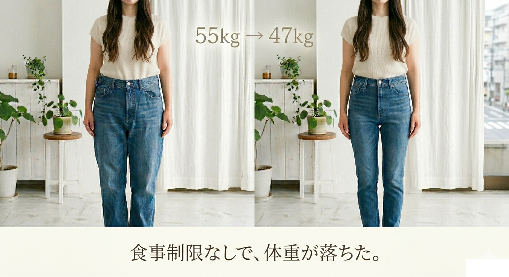
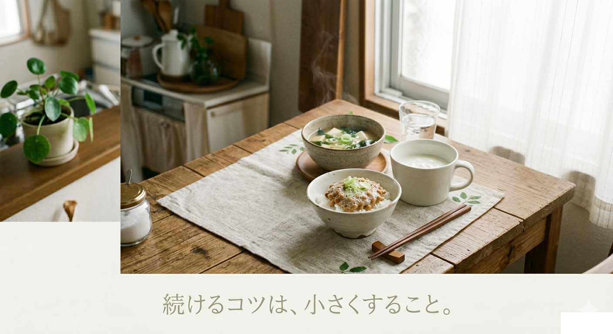
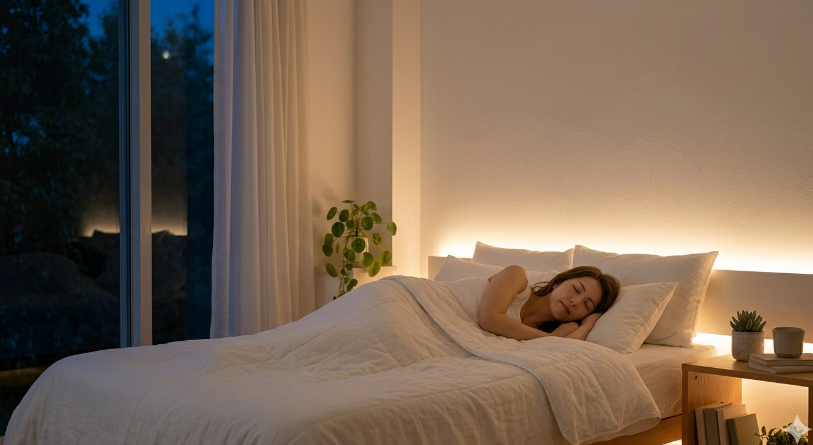
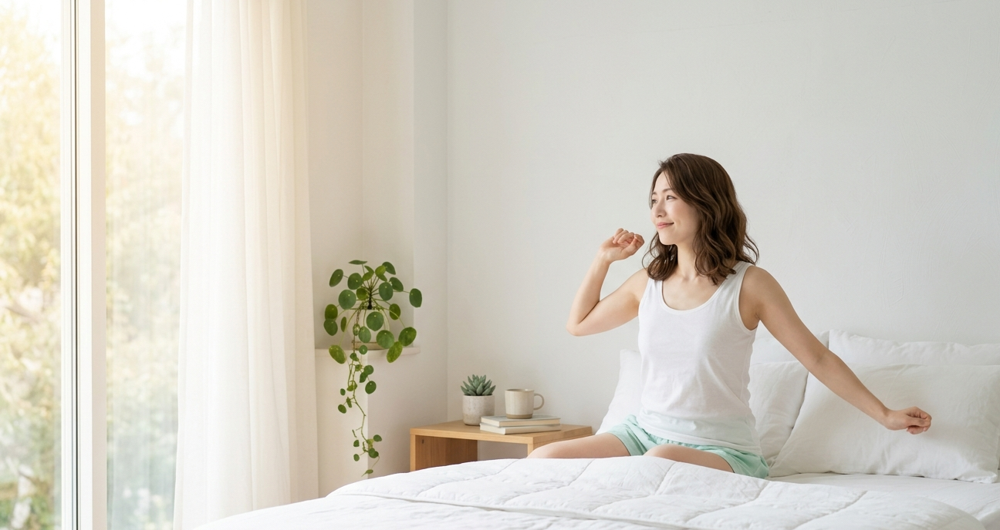
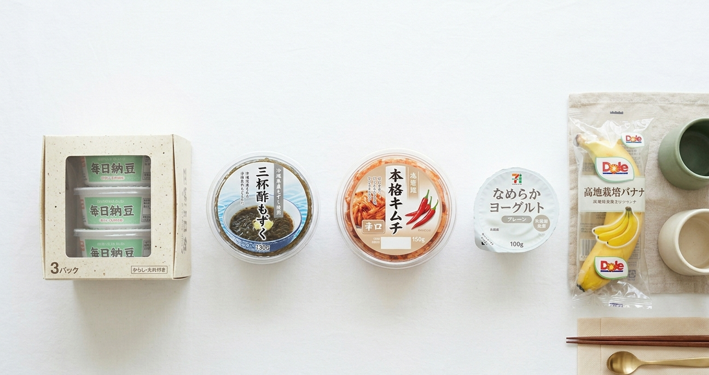
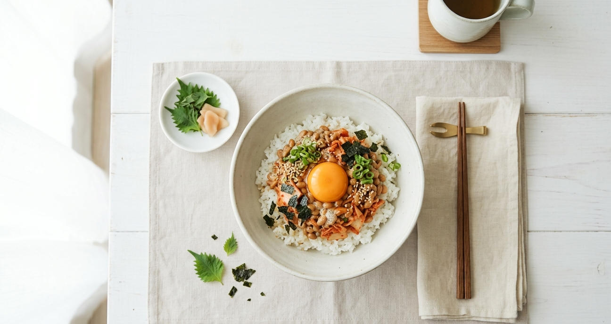
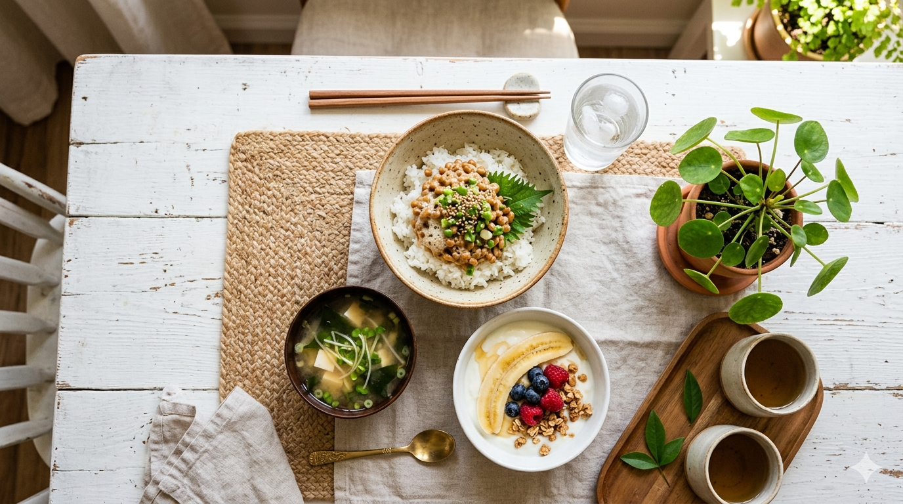

食事制限なしで、体重が落ちた。腸活で55kgから47kgになるまで
カロリーを数えない、食事量を減らさない。腸を整えたら食欲が変わって、半年で8kg落ちた。ダイエットしていない感覚のまま体型が変わった理由...
続きを読む →朝起きられない・お菓子がやめられない・なんとなく疲れてる。
それ、腸のせいかもしれません。
LATEST POSTS

カロリーを数えない、食事量を減らさない。腸を整えたら食欲が変わって、半年で8kg落ちた。ダイエットしていない感覚のまま体型が変わった理由...
続きを読む →
続かないのは意志が弱いからじゃない。方法が合っていないだけ。小さく始める・足し算で考える・体の変化を感じる、3つのコツを紹介...
続きを読む →腸活は食べるものだけじゃない。水・白湯・コーヒー・緑茶・甘酒、それぞれが腸にどう影響するか看護師の視点で解説...
続きを読む →
寝つきが悪い・朝が重い・日中ずっと眠い。変わったのは食事を変えてから。腸とセロトニンの関係、眠れる体になるまでの体験を正直に書きます...
続きを読む →
腸活を始めたけど、いつ効果が出るの？2〜3週間で目覚めが変わり始め、半年で55kg→47kgに。変化が来るまでの正直なタイムラインを紹介...
続きを読む →
自炊しなくても腸活できます。コンビニで買える発酵食品・食物繊維食品を厳選。忙しい働く女性でも今日から始められる7つを紹介...
続きを読む →
納豆×キムチで善玉菌を爆増させる最強の朝ごはん。材料3つ・5分以内でできて、便秘・肌荒れ・朝起きられない悩みに効果的です...
続きを読む →
朝、アラームが鳴るたびに「もう5分だけ」ってなる。夕方になると謎に疲れて、気づいたらお菓子を食べてる。意志の問題じゃなかった...
続きを読む →看護師7年。腸活でメンタル安定・朝スッキリを実現。
朝起きられない・お菓子がやめられない・なんとなくずっと疲れてる人へ、食事から体を整える方法を発信します。